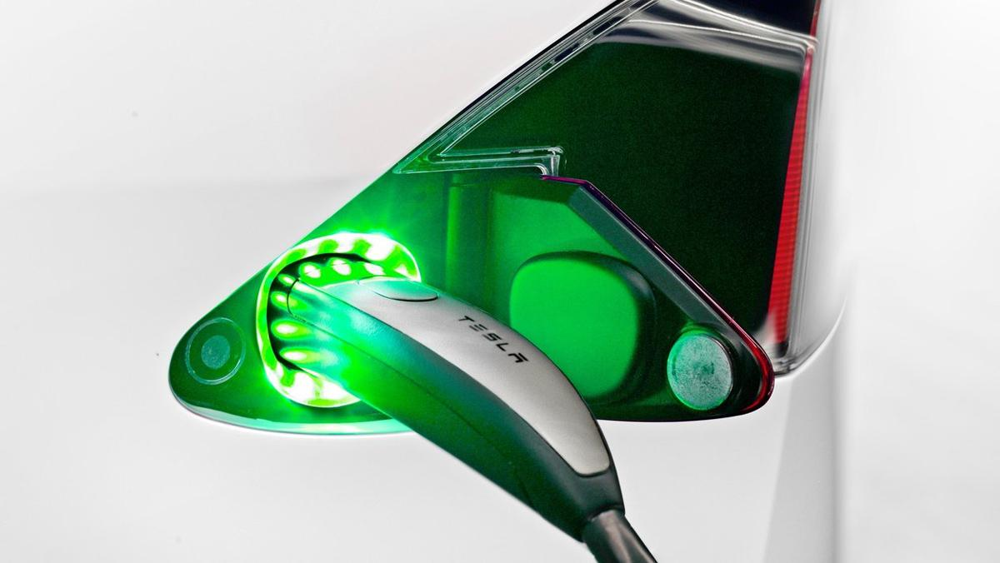

Noruega ya no es líder en coches eléctricos
El mercado de coches europeo está cambiando… Noruega ya no es líder en coches eléctricos, después de varios años dominándolo, según apuntan desde Automotive News Europe. Y parece que está será la tendencia a seguir.
En esta ocasión, ha sido Alemania el país que le ha quitado el puesto a Noruega en coches eléctricos, pero seguramente, a medida que estos se hagan más populares y que la tecnología avance, irán apareciendo nuevos países en la lista.
Sin embargo, hablando en presente, nos atrevemos a decir que esta noticia es muy positiva para fabricantes alemanes como Volkswagen o Daimler, que andan inmersos en la electrificación de su gama con un objetivo claro: ponerle las cosas difíciles a Tesla, que podría estar en bancarrota…
Pero hablemos de números: ¿cómo de populares son los coches eléctricos en Alemania? Las ventas se han incrementado un 70% en el primer trimestre del año, con un total de 17.574 unidades. Es importante destacar que aquí también se incluyen vehículos híbridos enchufables y no solo eléctricos puros.
Por cierto, dos de los coches eléctricos más demandados en Alemania son el BMW i3 y el Nissan Leaf, así como el BMW Serie 2 Active Tourer PHEV. Aunque es cierto que Tesla está ganando seguidores también, pero en este caso, Noruega sigue siendo líder en Europa y el tercer mercado del mundo para la compañía de Elon Musk, por detrás de Estados Unidos y China.
En resumen, podemos decir que la tendencia en Europa es positiva, pues cada vez crecen más las ventanas de vehículos electrificados (últimamente en un 41%). Las de los vehículos eléctricos ha crecido un 35% y la de los híbridos enchufables un 47%; y claro, mientras, las ventas de coches diésel han caído un 17%.
“A medida que crece el número de consumidores de automóviles eléctricos, la tolerancia con respecto a los problemas de calidad también puede ser menor y esto afecta a los primeros usuarios que optaron por Tesla por la novedad”, explica Jürgen Pieper, analista de Bankhaus Metzler.
19 Abr 2018 21:22